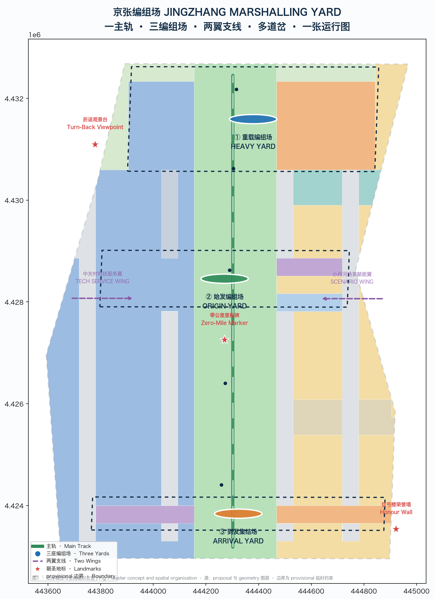
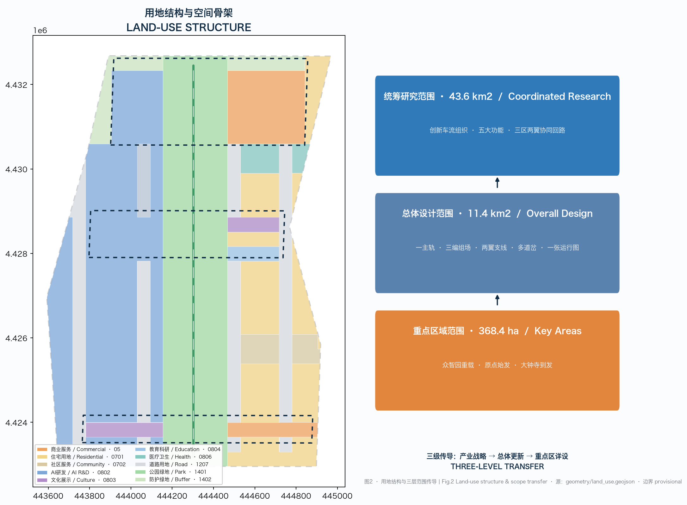
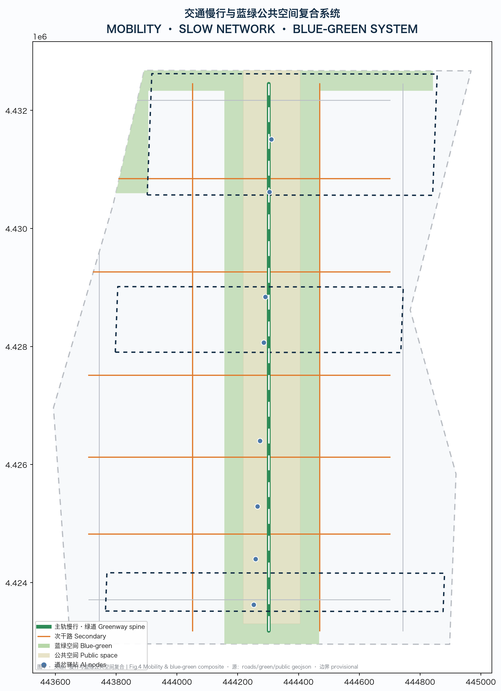
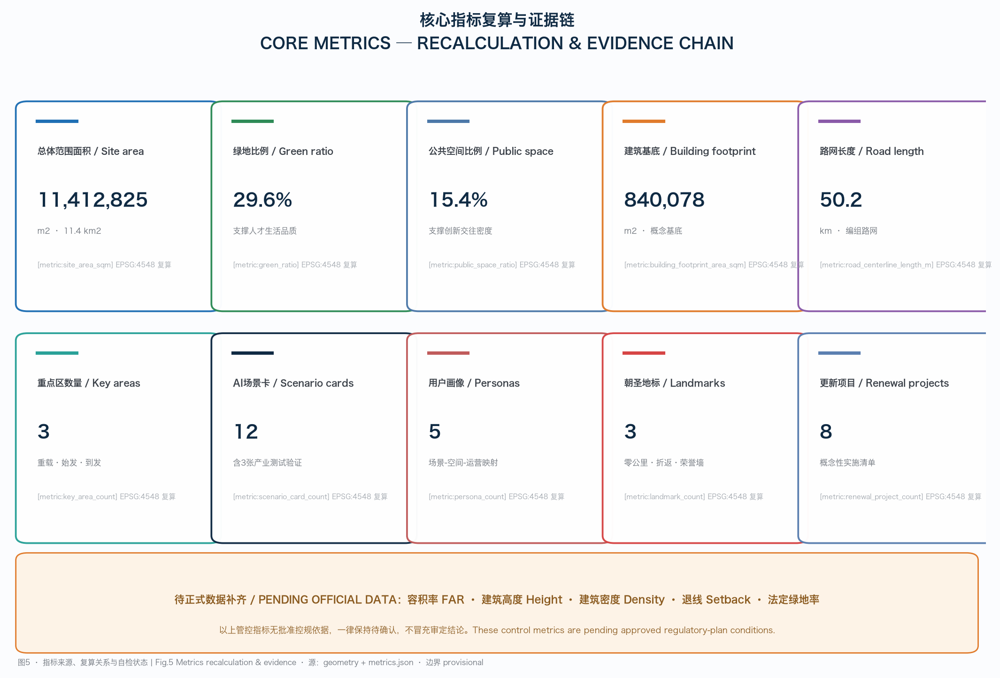
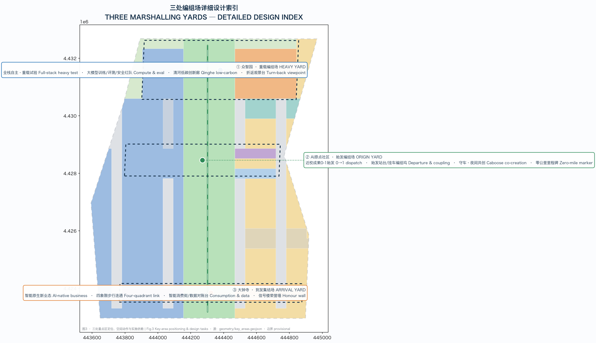

01Overview Map · Master Concept

One main track (heritage park slow/cultural spine), three marshalling yards (Zhongzhiyuan heavy / Origin start / Dazhongsi arrival), two feeder wings, many switches (AI scenario nodes) and one working timetable.
02Three-Level Scope
- Coordinated research 11.4 km²
- Overall design 11.4 km²
- Key detailed-design area 368.4 ha
03Key Areas
Heavy Marshalling Yard重载编组 / 全栈自主·重载试验·折返观景台
Origin Marshalling Yard始发编组 / 近校0-1始发·挂车编组坞·零公里里程碑
Arrival & Assembly Yard到发集结 / 智能原生新业态·四象限连通·信号楼荣誉墙
04Land Use & Spatial Structure

| Code | Land use | Area m² | Share |
|---|---|---|---|
| 0802 | AI R&D & transfer | 3,335,198.443 | 29.2% |
| 0803 | Culture & exhibition | 216,884.967 | 1.9% |
| 0804 | Education & research | 86,753.987 | 0.8% |
| 0806 | Healthcare | 177,134.569 | 1.6% |
| 05 | Commercial services | 801,946.491 | 7.0% |
| 0701 | Residential | 1,629,274.727 | 14.3% |
| 0702 | Community services | 220,714.039 | 1.9% |
| 1401 | Park green | 3,034,095.776 | 26.6% |
| 1402 | Buffer green | 340,817.047 | 3.0% |
| 1207 | Road land | 1,570,005.338 | 13.8% |
05Mobility · Blue-Green Network

29.57%Green ratio
15.39%Public-space ratio
50.2 kmRoad network length
06Buildings & Renewal Projects
840,078.352 m²Concept building footprint
8Renewal projects (concept)
- JZ-01 · Main-track gap stitching
- JZ-02 · Zhongzhiyuan heavy-yard frontage
- JZ-03 · Origin departure platform & transfer street
- JZ-04 · Dazhongsi four-quadrant link
- JZ-05 · Signal Tower sandbox
- JZ-06 · Switch posts & AI scenario nodes
- JZ-07 · Data settlement counter
- JZ-08 · Annual convention public route
07AI Scenarios
| ID | Scenario card | Type |
|---|---|---|
| SC-01 | Heavy Test Bench | 产业测试验证 |
| SC-02 | Turn-Back Test Line | 产业测试验证 |
| SC-03 | Coupling Bay | 产业测试验证 |
| SC-04 | Departure Platform | 生活/服务 |
| SC-05 | Signal Tower Sandbox | 治理/测试 |
| SC-06 | Data Settlement Counter | 生活/服务 |
| SC-07 | Intelligent Consumption Street | 生活/服务 |
| SC-08 | AI Slow-Mobility Navigation | 生活/服务 |
| SC-09 | Caboose Co-creation | 生活/服务 |
| SC-10 | Urban Intelligent Dispatching | 治理/服务 |
| SC-11 | Pilgrimage Special | 文化/运营 |
| SC-12 | Annual Marshalling Convention | 文化/运营 |
SC-01/02/03 are industry test/validation scenarios: bookable, governable, exit-able.
08Core Metrics · Recalculation & Evidence
11.41Site area km²
29.57%Green ratio
15.39%Public-space ratio
84Building footprint (10k m²)
50.2Road length km
3Key areas
12Scenario cards
5Personas
3Landmarks
8Renewal projects
Pending official data
- floor_area_ratio — pending approved regulatory data: Approved FAR controls and official floor-area data are not in the public site package; pending official control conditions.
- building_height_m — pending approved regulatory data: Official building-height controls pending professional confirmation.
- green_ratio_official — pending approved regulatory data: Approved green-ratio controls pending official data.

09Task Coverage
The compliance matrix covers announcement 1.3/1.4/1.5 and agent.1–agent.6: 23 mandatory tasks.
| ID | Task | Evidence (sections/layers/metrics) |
|---|---|---|
| 1.3.1 | 构建世界级AI创新生态体系 | 2 · 9 · 12 |
| 1.3.2 | 建设适配AI新质生产力的新型城市形态 | 2 · 6 · 10 |
| 1.3.3 | 打造全球AI创新人才向往的高品质城区 | 2 · 6 · 9 |
| 1.4.1 | 统筹研究范围 | 2 · 9 · 6 |
| 1.4.2 | 总体设计范围 | 2 · 6 · 10 |
| 1.4.3 | 重点区域范围 | 2 · 1 · 5 |
| 1.5.1.1 | 统筹研究范围：AI创新生态体系 | 1 · 9 · 12 |
| 1.5.1.2 | 统筹研究范围：适配人工智能的未来城市形态 | 2 · 6 · 8 |
| 1.5.2.1 | 总体设计范围：产业目标与功能布局 | 2 · 2 · 9 |
| 1.5.2.2 | 总体设计范围：城市更新总体框架 | 2 · 6 · 5 |
10Self-Check Status
| Check | Result | Severity | Message |
|---|---|---|---|
| BOUNDARY_TRUST | pass | PASS | Provisional site boundary is present and disclosed; replace with official redline before professional scoring. |
| KEY_AREAS_TRUST | pass | PASS | Three required key areas are provisional and non-overlapping; replace with official polygons before professional scoring. |
| LAND_USE_TOPOLOGY | pass | PASS | Land-use polygons partition the site boundary seamlessly without gaps or overlaps. |
| VISUAL_STATIC | pass | PASS | Static HTML visualization is offline-only and metric-consistent with metrics.json. |
| PROFESSIONAL_EVIDENCE | pass | PASS | Proposal cites standards, design-depth items, geometry, metrics, sources and assumptions in each required section. |
| METRIC_RECALC | pass | PASS | Known metrics are recomputed from submitted geometry under EPSG:4548 and match spatial review. |
| BILINGUAL_PACKAGE | pass | PASS | Bilingual contract v1 is satisfied: proposal.en.md, bilingual HTML, drawings and neutral-language figures. |
Design-depth matrix 15/15 · Standard matrix 6/6
11Sources & Assumptions
Sources
- SITE-PACKAGE — · · 项目 brief/site-package/ 设计任务书、允许设计空间、枚举、指标区间、模式与本地标准快照。
- SOURCE-REGISTRY — · · 中央公开资料登记表，区分 formal/background/provisional 用途边界。
- PROCESSED-FACT-PACK — · · 三层范围、任务、来源用途与缺口清单的导航层；非新权威来源。
- OFFICIAL-ANNOUNCEMENT — 北京市规划和自然资源委员会海淀分局 · 2026-05-09 · 资格预审公告的三层范围、三处重点区、设计任务、语言与深度语境。
- AGENT-TASKBOOK — · 2026-05-18 · 智能体开源征集任务书：三大定位、五大功能、三区两翼、六项任务与统一边界条款。
- BOUNDARY-SOURCE — · · 提交 site_boundary 的 provisional 来源，依据公告文字四至与面积约束粗略定位。
- KEY-AREA-SOURCE — · · 三处重点区 provisional 多边形来源，按公告名称、南北顺序与面积粗略定位。
- CASE-STUDIES — · · 七个全球 AI 创新生态案例的公开产业/园区资料，用于提炼可转化编组机制。
- STANDARD-URBAN-DESIGN — · · 住建部《城市设计管理办法》本地快照。
- STANDARD-CONTROL-PLAN — · · 住建部《城市、镇控制性详细规划编制审批办法》本地快照。
- STANDARD-LAND-USE — · · 自然资源部《国土空间调查、规划、用途管制用地用海分类指南》本地快照。
Assumptions
- A-CONTROLS-001 · pending_professional_confirmation — 批准控规的容积率、建筑高度、密度、退线、道路红线与绿地率等法定控制条件需以官方附件为准。
- A-BOUNDARY-001 · provisional — site boundary 与三处 key area 均为 provisional 粗略多边形，依据公告文字四至与面积约束生成。
- A-BUILDING-001 · pending_professional_confirmation — 现状建筑底数、权属与工程条件缺失；概念建筑基底仅表达功能承载方向。
- A-UTILITY-001 · pending_professional_confirmation — 管线、能源、排水、防洪、消防等工程资料缺失。
- A-OPS-001 · concept — 运营数据、活动参与与场景使用频次等绩效指标需长期运营观测校准。
12Three Yards · Detailed Design
